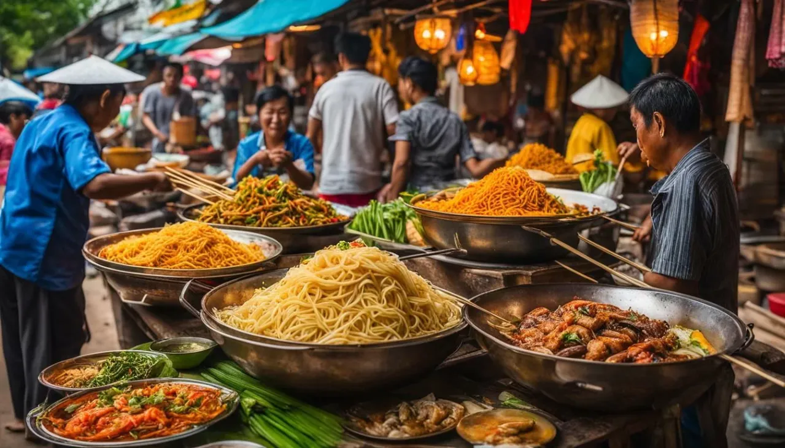
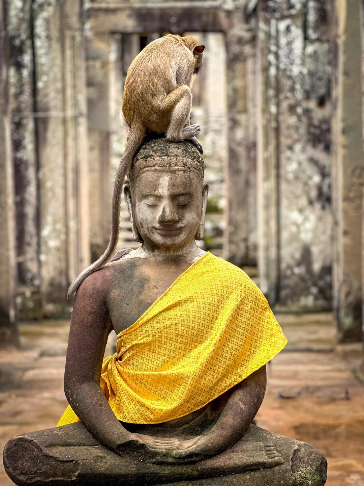
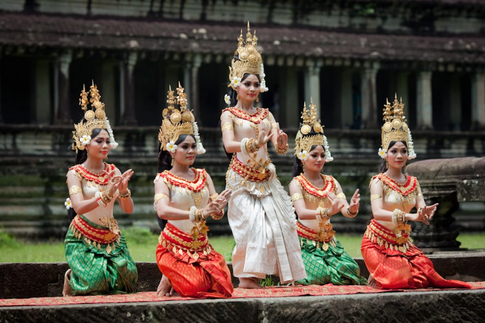
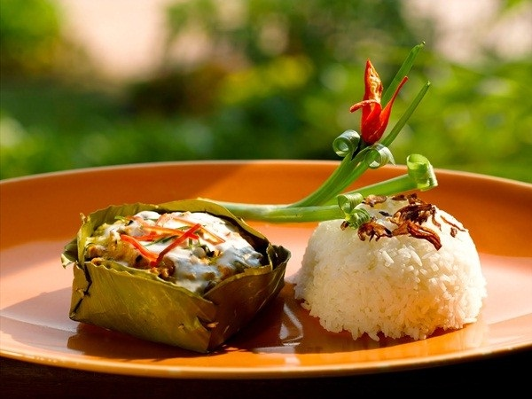
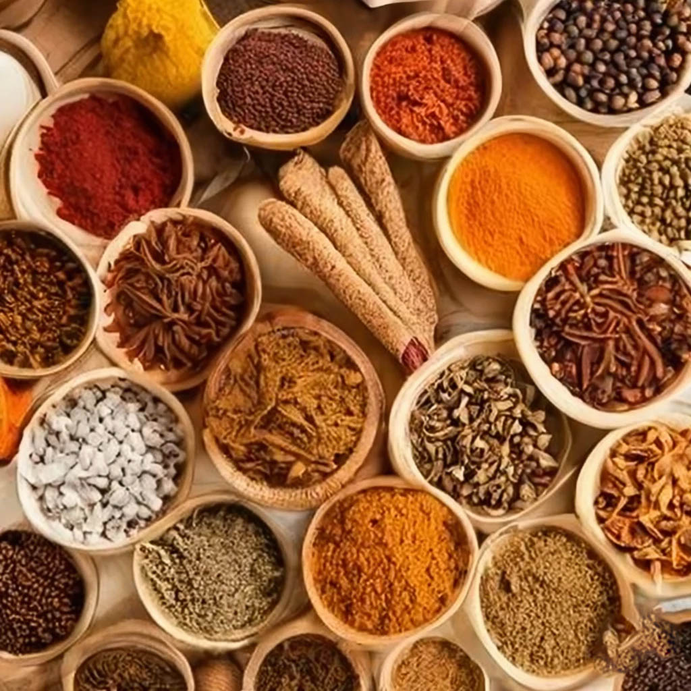
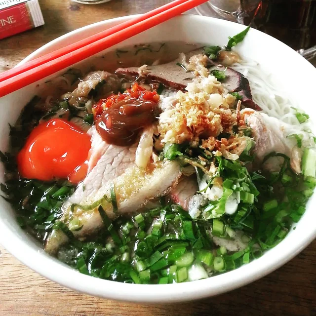
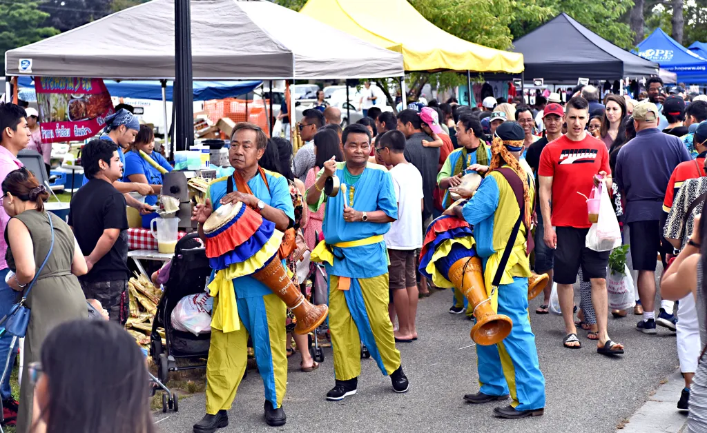

OUR MISSION. OUR CULTURE. OUR STORY.

The Golden Monkey seeks to reinvigorate Cambodian American culture through sharing delicious foods. Chenda relocated to the US in 2011 from Phnom Penh, Cambodia and has worked in various food industries. Peter was born in Minnesota and has lived in Lynn, Massachusetts since 1992. Recently, Chenda's mother Phally has joined the two to share and preserve authentic Cambodian flavors to pass on to the community.
Our StoryOur Favorites

Spring Rolls "Nam Chow"
Rolled in rice paper, stuffed with pork, shrimp, cucumber carrotts, bean sprouts, mint and vermicili. Enjoy with fish sauce or peanut sauce dip.

Papaya Salad
A refreshing mix of shredded papaya, tomatoes, and a tangy dressing. How spicy do you want it?

Lemon Grass Beef Skewers "Sach Ko Chakak"
Marinated with the Cambodian traditional lemongrass beef skewers.

Diced Beef & Rice "Bai Loc Lak"
This hearty meal has al the beef. Shredded beef stir fry topped with cilantro and black pepper is served with jasmine rice or fried rice

Flat Rice Noodles "Mekathang"
Watch out for that food coma coming your way. Flat rice noodles pan fried with Chinese broccoli, carrots, straw mushrooms and baby corn. Served saucy or dry.

Wings & Rice "Bai Slap Mon"
Your favorite wings (choose wing flavor or not) served with jasmine or fried rice.

Shaved Ice
Cambodian style slushie

Mango Smoothie
Mango smoothie with choices of boba fillings including fruit poppers, jellies, and tapioca pearls.

Blueberry Smoothie
Blueberry smoothie blended with choice of boba fillings: tapioca pearls, fruit poppers, or assorted jellies.
WHAT OUR GUESTS SAY
REVIEWS
FIND US HERE
FROM OUR HOME TO YOURS

Our brand is heavily tied to our Cambodian heritage and the flavors of home. We strive to bring the authentic taste of Cambodia to your table through our unique recipes and traditional cooking methods.

Color symbolism in Cambodian culture have deep meaning to the people. The Golden Monkey represents the sun and is a symbol of good fortune.

Heritage is an important part of our identity and plays a significant role in shaping our culinary traditions. We are committed to preserving and sharing the rich cultural legacy of Cambodia through our food.

Known for its vibrant flavors and use of fresh ingredients, our menu features traditional dishes that showcase the rich culinary heritage of Cambodia.

The foundation of our cuisine is built on sweet, salty, and sour flavors, which are characteristic of traditional Khmer cuisine - along with popular herbs and spices such as lemongrass, galangal, and kaffir lime leaves.

Most popular dishes include Amok, Lok Lak, and various noodle soups.

Lynn Massachusetts is where is all started. With a large population of Cambodian immigrants, we were able to establish a strong community and share our culinary heritage with the local area.
Phnom Penh, Cambodia is where Chenda, co-owner of the Golden Monkey, was born & raised. With Peter, she's been able to pass on the rich cultural legacy of Cambodia through food.

We give back by offering authentic Khmer cuisine at numerous cultural events - like Lynns annual neighborhood events and Lowells Cambodian annual water festival.
STAY CONNECTED
Follow us on social media for updates, promotions, and more!


.png)